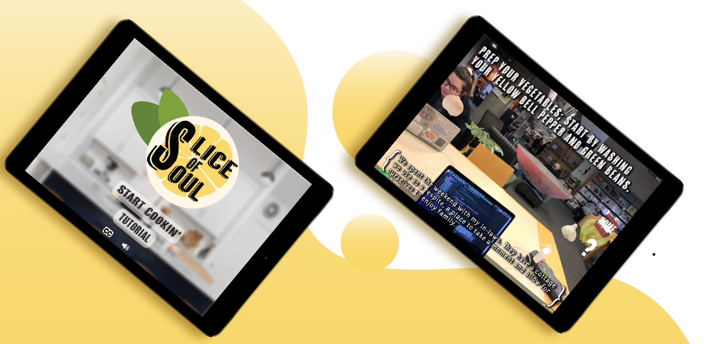
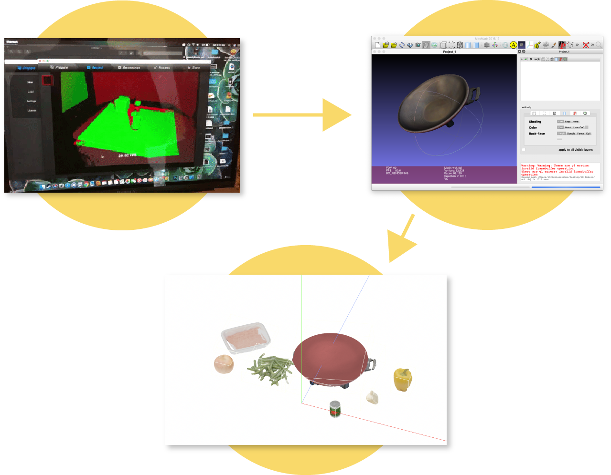

Developed in 2019
Roles: UX Design, Developer
Slice of Soul tells the stories of people through their experiences with food. It's an interactive experience where you complete gestures on the screen to finish making a recipe, while viewing the ingredients in your own space using Augmented Reality. As you complete the recipe the story unfolds, allowing the common love of food to be a space for empathy and experience sharing.
 The design for this app is supposed to mimic the homeliness of your kitchen while also maintaining a modern feel.
I spent some time thinking about what elements are present while cooking in a kitchen, and asking people what they typically do
to share recipes.
I realized that one of the biggest components of sharing recipes and experiences is recipe cards. The response I received was that
recipes that are written on cards and shared through a recipe box are considered more personal. To mimic this, we had our recipes
and starting screens showcase a box in which the user draws recipe cards from to chose the experience. To the right you can see what
the visual designers on my team came up with.
Beyond the home screens for this app, there was also the challenge for designing in AR.
It became clear to me from the first test that our original text wasn't going to show up well on the screen,
and our team researched other AR apps to determine that white text with a dark shadow allowed for visibility in all
environments.

We also wanted to have 3D models for this project that were realistically part of your kitchen and blended well with the real world. To do this, we used a structure scanner and Skanect software to make 3D models of real life objects. Scanning with Skanect allowed me to create a colored mesh of the environment scanned that I could then use other software (such as Meshlab) to touch up and create texture files for. Afterwards these models could be placed into our XCode project. I was in charge of scanning, recoloring and adding these to the project, which took a lot more time than I had considered. I learned a lot about budgeting time and prioritizing what was most important for our team to have a working demo at the end of our quarter.
While doing the programming for this project, I learned a lot of new things about using AR and SceneKit in XCode, as well as learning how to incorporate 3D models into code. I also gained experience with level design, as the story consisted of multiple steps that required changing text and scenes. I wanted to be able to create a good user experience by working to make sure that audio for the story played correctly alongside the gestures, thinking about instructional text should appear for the user, and how long that text needs to appear for in order to be useful. I really enjoyed programming for this project as I was able to change mechanics to change the user experience as I was creating this project in XCode.